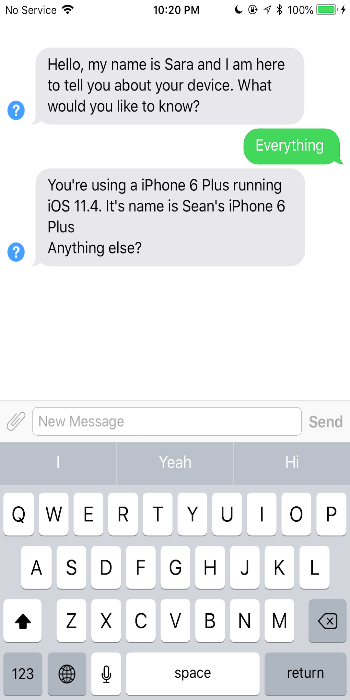
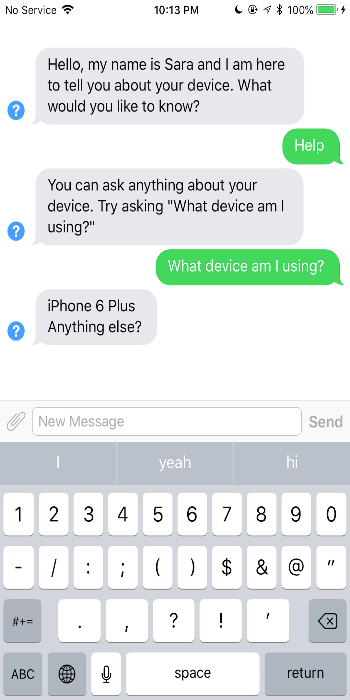
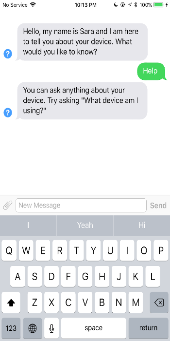
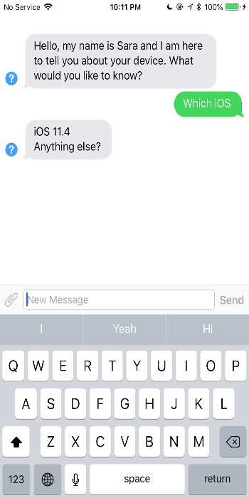

Sara Bot
What Siri can't Tell You
Ever wondered what iOS version you have? Don't remember which iPhone or iPad model you have? Have you tried asking Siri?
Introducing Sara! Sara is a simple chatbot that knows about YOUR device!
You can ask her questions like:
- What iPhone model am I using?
- Which iOS do I have?
- What's my device's name?
Download it today! It's FREE with NO ADS!

Sara BotContact Us